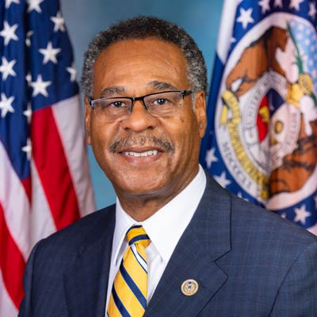

<div class="container">
	<div class="row">
        <div id="speaker-detail" class="col-lg-10 col-lg-offset-1">
            <div class="row">
            	<button title="Close (Esc)" type="button" class="mfp-close">×</button>
                
                <div class="col-md-5 col-lg-5 no-padding">
                    
                </div>
                    
                <div class="col-md-7 col-lg-7">
                    <h2>Emanuel <span>Cleaver, II</span></h2>
                    <p class="lead">U.S. Representative</p>
                    <!--
                    <ul class="social list-inline list-unstyled">
                    	<li><a href=""><i class="fa fa-2x fa-facebook-square"></i></a></li>
                        <li><a href=""><i class="fa fa-2x fa-twitter-square"></i></a></li>
                        <li><a href=""><i class="fa fa-2x fa-google-plus-square"></i></a></li>
                        <li><a href=""><i class="fa fa-2x fa-linkedin-square"></i></a></li>
                    </ul>
                    -->
                    
                    <div id="content">
                    	<p>Emanuel Cleaver, II is now serving his seventh term representing Missouri’s Fifth Congressional District, the home district of President Harry Truman. He is a member of the House Committee on Financial Services; Chair of the subcommittee on National Security, International Development, and Monetary Policy; member of Subcommittee on Housing, Community Development and Insurance; member of the House Committee on Homeland Security; member of the Subcommittee on Transportation and Maritime Security; and member of the Select Committee on the Modernization of Congress.</p>

                        <p>Having served for twelve years on the city council of Missouri’s largest municipality, Kansas City, Cleaver was elected as the city’s first African American Mayor in 1991.</p>

                        <p>During his eight-year stint in the Office of the Mayor, Cleaver distinguished himself as an economic development activist and an unapologetic redevelopment craftsman. He and the City Council brought a number of major corporations to the city, including TransAmerica, Harley Davidson, and Citi Corp. Cleaver also led the effort, after a forty-year delay, to build the South Midtown Roadway. Upon completion of this major thoroughfare, he proposed a new name: The Bruce R. Watkins Roadway. Additionally, his municipal stewardship includes the 18th and Vine Redevelopment, a new American Royal, the establishment of a Family Division of the Municipal Court, and the reconstruction and beautification of Brush Creek.</p>

                        <p>Cleaver has received five honorary Doctoral Degrees augmented by a bachelor’s degree from Prairie View A&M, and a master’s from St. Paul's School of Theology of Kansas City.</p>

                        <p>In 2009, Cleaver, with a multitude of accomplishments both locally and Congressionally, introduced the most ambitious project of his political career—the creation of a Green Impact Zone. This zone, consisting of 150 blocks of declining urban core, has received approximately $125 million dollars in American Recovery and Reinvestment funds. The Green Impact Zone is aimed at making this high crime area the environmentally greenest piece of urban geography in the world. This project includes rebuilding Troost Avenue, rehabbing bridges, curbs and sidewalks, home weatherization, smart grid technology in hundreds of homes, and most importantly, hundreds of badly needed jobs for Green Zone residents.</p>

                        <p>During the 112th Congress, Cleaver was unanimously elected the 20th chair of the Congressional Black Caucus.</p>

                        <p>In 2016, as Ranking Member of the Housing and Insurance Subcommittee, Cleaver successfully co-authored the largest sweeping reform bill on housing programs in 20 years, the Housing Opportunity Through Modernization Act, a bipartisan comprehensive housing bill that passed into law with a unanimous vote.</p>

                        <p>In 2018, Congressman Cleaver received the Harry S. Truman Good Neighbor Award, the highest honor bestowed by the Harry S. Truman Good Neighbor Award Foundation. Past honorees include President Bill Clinton, the late Senator John McCain, and Justice Sandra Day O’Connor.</p>

                        <p>Cleaver, a native of Texas, is married to the former Dianne Donaldson. They have made Kansas City home for themselves and their four children, and grandchildren.</p>
                    </div>
                </div>
            
            </div>
        </div>
    </div>
</div>